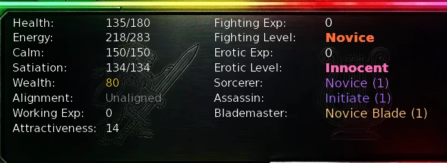
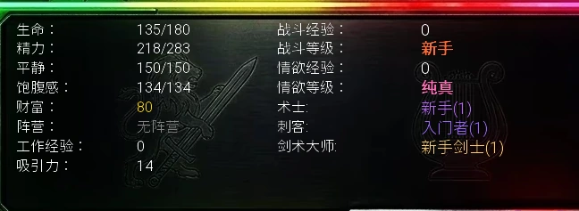

Select a screenshot to view the complete image. Screens show example inventories and progress.
Blademaster, Assassin, and Sorcerer are three independent combat paths. You can learn all three. Each strengthens its own actions and gains its own points; your starting proficiency, Fighting XP, weapon level, and faction clout remain separate.
Unlock each path through its trainer
| Path and trainer | Requirements | Training cost and result |
|---|---|---|
| Blademaster · Muramasa | Close Friend or higher; 200 Fighters Guild clout. Visit Knights’ Training Grounds, 08:00–18:00. | 300 minutes, 150 Energy, 100 Calm. Unlocks Blademaster at 0 points / rank 1. |
| Assassin · Arestes | 350 Thieves Guild clout and access to her Hidden Chamber. She is scheduled there all day; the training has no additional relationship-stage requirement. | 300 minutes, 150 Energy, 150 Calm. Unlocks Assassin at 0 points / rank 1. |
| Sorcerer · Aziza | In Love or higher; Lime acquired as Maid #4; Sashina’s Gift learned; normal-dungeon Floor 40 miniboss defeated; full-version access. Visit Arcane Shop, 10:00–18:00. | 300 minutes, 150 Energy, 150 Calm; +30 Aziza relationship. Unlocks Sorcerer at 0 points / rank 1. |
- Build the listed relationship, clout, skills, and dungeon record first.
- Restore enough Energy and Calm, then visit the trainer’s relevant location while present.
- Select the action named Blademaster, Assassin, or Sorcerer and complete the training.
- Check your character progression. A fresh path is already rank 1 at zero points; the training action disappears once acquired.
Use the Fighters Guild, Thieves Guild, and Wizard faction guides for prerequisites. Assassin’s 350-clout requirement is higher than the final named guild rank; reaching that title alone is not the unlock.

Use the right actions to progress
| Path | Actions that earn points | Rank benefit |
|---|---|---|
| Blademaster | Attack; Power Strike. | Multiplies their damage. |
| Assassin | Quick Attack; Stormslash. | Multiplies their damage and unlocks extra Quick Attack continuation. |
| Sorcerer | Fire, Ice, Light, Dark, Sleep, and Heal Magic. | Multiplies damage spells and Heal’s healing. Sleep earns points but retains its own success rules. |
The ordinary reward is one point per qualifying action, after acquiring the path. A later miss, enemy dodge, resisted Sleep, or absorbed spell can still earn that action’s point. Free additional strikes do not each earn another action point. Defend and fleeing are not progression actions.
Low-Energy exception: physical point awards check the pre-action standard Energy thresholds: Quick Attack needs at least 5, Stormslash 15, Power Strike 20. Endurance Training lets the moves cost 4 / 13 / 18, but having only the discounted amount can allow the move without a path point. Keep the standard amount available when training points. Spells use their affordable spell-cost check.
In Infinity Dungeons, a qualifying action instead starts at 1 + a random whole number from 1 to the current Infinity floor. Floor 10 therefore starts at 2–11 points. The enemy’s experience-trait multiplier applies, then any specialist-point multiplier, rounding down after each step and retaining at least one point. Metal Slime has a separate ×2 specialist multiplier.
Ranks use cumulative points
Multiplier = 1 + 0.15 × rank. Unlocking rank 1 immediately gives ×1.15 on supported damage or healing. The multiplier is applied after ordinary enemy percentage reduction, floor defense, and guard calculations. It does not cancel a dodge, absorption, force field, or special encounter protection. Owning three paths does not multiply one attack by all three.
View every rank threshold
| Rank | Cumulative points | Multiplier | Rank | Cumulative points | Multiplier |
|---|---|---|---|---|---|
| 1 | 0 | ×1.15 | 11 | 73,500 | ×2.65 |
| 2 | 100 | ×1.30 | 12 | 116,700 | ×2.80 |
| 3 | 300 | ×1.45 | 13 | 181,500 | ×2.95 |
| 4 | 700 | ×1.60 | 14 | 278,700 | ×3.10 |
| 5 | 1,500 | ×1.75 | 15 | 424,500 | ×3.25 |
| 6 | 3,100 | ×1.90 | 16 | 643,200 | ×3.40 |
| 7 | 6,300 | ×2.05 | 17 | 971,250 | ×3.55 |
| 8 | 12,700 | ×2.20 | 18 | 1,463,325 | ×3.70 |
| 9 | 25,500 | ×2.35 | 19 | 2,201,438 | ×3.85 |
| 10 | 44,700 | ×2.50 | 20 | 3,308,607 | ×4.00 |
Ranks continue beyond 20. Rank 21 needs 5,799,736 cumulative points and gives ×4.15; rank 22 needs 9,536,429 and gives ×4.30. Each later rank adds another 0.15 to the multiplier. The next point span grows by ×1.5, rounded down, rather than repeating the first 100-point requirement. The last named title continues with the higher rank appended.
Assassin’s Quick Attack chains
After Assassin is unlocked, a connecting Quick Attack can trigger more Quick Attacks while the enemy survives. The first continuation chance is 50 + Assassin rank percent; after every extra hit, the next chance drops by 10 percentage points. Damage is recalculated for each extra strike and includes the current Assassin multiplier. These continuations spend no extra Energy and give no extra action points.
Dark Consolador adds 15 points to the starting chance and reduces the decline to five points. Arestes offers the item at 500 Thieves Guild clout; receiving it takes 30 minutes. It is a separate key item, not a requirement to unlock Assassin.
View a rank-20 chain example
| Next extra strike | Ordinary | With Dark Consolador |
|---|---|---|
| 1st | 70% | 85% |
| 2nd, if the first continued | 60% | 80% |
| 3rd | 50% | 75% |
| 4th | 40% | 70% |
| 5th | 30% | 65% |
A failed continuation or unrecovered enemy dodge ends the chain. These are successive conditional rolls: a 60% second roll is not a standalone 60% chance to receive two extra hits. Supported Luck Potion retries can rescue at most one failed continuation in a chain. Stormslash’s Tempest Strike chain has its own 50%-start, five-point-decline rules.
An enemy force field active at the start of the action protects its Health through that whole action, including extra chain hits after the field breaks. The next player action can then attack Health.
Make practical training choices
- Strength and low-cost ordinary attacks: Blademaster supports Attack as well as Power Strike, so its progression does not require spending Energy every turn.
- Ability and repeated physical strikes: Assassin supports Quick Attack and Stormslash; plan enough accuracy to connect and enough defense to survive longer fights.
- Magic damage or sustained healing: Sorcerer supports six spell types. Mana Channeling and Inner Peace help the resource budget; its rank does not multiply Sleep success.
- Faster progression: Infinity depth and eligible trait multipliers increase points. Choose a survivable depth instead of assuming the deepest floor is the most efficient place to train.
Common obstacles
The training action is missing
Check the trainer’s location and schedule, all listed requirements, and whether the path is already acquired. Sorcerer specifically needs the normal Floor 40 miniboss defeat record, not only access to that floor.
I can use an attack but gained no point
Check that the corresponding path is unlocked and that you began with the standard physical Energy threshold. Discounted move costs and point qualification are separate at low Energy. Extra chained hits are not extra progression actions.
I gained a Sorcerer point without hurting the enemy
Sleep and Heal are supported actions. A resisted or absorbed cast can also pass the action-point check; damage is not the only measure of use.
My rank bonus seems absent
Use the actions listed for that path. Read enemy dodge, guard, absorption, and force-field messages; the multiplier does not remove those rules.
剑术大师、刺客、术士是三条独立的战斗成长路线，可以全部学习。每条只强化对应招式，并单独积累点数；开局专长、战斗经验、武器等级和派系声望仍各自计算。
向对应导师学习
| 路线与导师 | 要求 | 训练消耗与结果 |
|---|---|---|
| 剑术大师 · Muramasa | 亲密朋友及以上；战士公会声望 200。前往骑士训练场，导师在场时间 08:00–18:00。 | 300 分钟、150 精力、100 镇定。解锁时为 0 点数／第 1 阶。 |
| 刺客 · Arestes | 盗贼公会声望 350，并能进入她所在的隐藏密室。她全天在此；本次训练没有额外关系阶段要求。 | 300 分钟、150 精力、150 镇定。解锁时为 0 点数／第 1 阶。 |
| 术士 · Aziza | 恋爱中及以上；已获得 4 号女仆 Lime；已学会 Sashina 的恩赐；击败普通地下城第 40 层小首领；拥有完整版访问权限。前往奥术商店，导师在场时间 10:00–18:00。 | 300 分钟、150 精力、150 镇定；Aziza 关系 +30。解锁时为 0 点数／第 1 阶。 |
- 先完成表中的关系、声望、技能和地下城记录条件。
- 恢复足够精力与镇定，在导师在场时前往对应地点。
- 选择名为「剑术大师」「刺客」或「术士」的行动，完成训练。
- 回到角色成长信息确认。刚解锁为 0 点数、第 1 阶是正常结果，学会后训练行动会消失。
前置玩法可参阅战士公会、盗贼公会和法师派系。刺客要求的 350 声望高于盗贼公会最后一个命名头衔的门槛，仅拿到该头衔还不等于能学习。

用对应招式，才会推进路线
| 路线 | 可获得点数的行动 | 阶级收益 |
|---|---|---|
| 剑术大师 | 攻击、强力打击。 | 提高这两项的伤害倍率。 |
| 刺客 | 快速攻击、风暴斩。 | 提高伤害倍率，并开放快速攻击的额外继续连锁。 |
| 术士 | 火、冰、光明、黑暗、催眠、治疗魔法。 | 提高伤害法术和治疗量。催眠获得点数，但成功率仍按自己的规则计算。 |
解锁路线后，普通战斗中每次符合条件的行动获得 1 点。后续未命中、被敌人闪避、催眠遭抵抗或法术被吸收，仍可能获得该行动点数。免费的追加攻击不会每击再给一点；防守与逃跑也不是路线成长行动。
低精力时的例外：物理行动发放点数时，检查的是出手前标准精力门槛：快速攻击至少 5、风暴斩至少 15、强力打击至少 20。耐力训练使实际费用降为 4／13／18，但只剩减耗后的数值时，招式可能用得出来却不加路线点数。专门练点数时，留足标准门槛。法术则通过是否足以支付对应施法费用来判断。
在无限地下城，每次符合条件的行动改为先获得1＋从 1 到当前无限层数之间的随机整数。例如第 10 层先得到 2–11 点，再乘敌人的经验特性倍率，之后再乘额外专家点数倍率；每一步向下取整，最终至少 1 点。金属史莱姆另有 ×2 专家点数加成。
阶级门槛看累计点数
倍率＝1＋0.15 × 当前阶级。刚解锁的第 1 阶已提供 ×1.15。对应伤害会在普通敌方百分比减伤、层数防御和防御姿态处理后再乘路线倍率；闪避、吸收、力场与特殊保护仍然生效。拥有三条路线，也不会让同一次攻击连乘三套倍率。
查看各阶级完整点数门槛
| 阶级 | 累计点数 | 倍率 | 阶级 | 累计点数 | 倍率 |
|---|---|---|---|---|---|
| 1 | 0 | ×1.15 | 11 | 73,500 | ×2.65 |
| 2 | 100 | ×1.30 | 12 | 116,700 | ×2.80 |
| 3 | 300 | ×1.45 | 13 | 181,500 | ×2.95 |
| 4 | 700 | ×1.60 | 14 | 278,700 | ×3.10 |
| 5 | 1,500 | ×1.75 | 15 | 424,500 | ×3.25 |
| 6 | 3,100 | ×1.90 | 16 | 643,200 | ×3.40 |
| 7 | 6,300 | ×2.05 | 17 | 971,250 | ×3.55 |
| 8 | 12,700 | ×2.20 | 18 | 1,463,325 | ×3.70 |
| 9 | 25,500 | ×2.35 | 19 | 2,201,438 | ×3.85 |
| 10 | 44,700 | ×2.50 | 20 | 3,308,607 | ×4.00 |
第 20 阶之后仍会继续成长：第 21 阶需要累计5,799,736 点，倍率 ×4.15；第 22 阶需要9,536,429 点，倍率 ×4.30。此后每阶再增加 0.15 倍率；下一阶的点数间隔按上一次间隔的 1.5 倍增长并向下取整，不会一直只花最初的 100 点。显示名称会沿用最后一个头衔，再附上更高阶级。
刺客的快速攻击连锁怎么继续
学会刺客路线后，快速攻击命中且敌人仍存活时，可以继续追加快速攻击。首次继续概率为50＋刺客阶级（%），每成功追加一次，下一次降低10 个百分点。每次追加都重新计算伤害，并使用当前刺客倍率；这些继续攻击不额外耗精力，也不额外给行动点数。
暗影慰藉者（Dark Consolador）使初始概率再加 15 个百分点，并将每次下降改为 5 点。Arestes 在盗贼公会声望 500时提供该道具，领取需要 30 分钟。这是独立关键道具，解锁刺客不要求先拿到它。
查看第 20 阶连锁概率示例
| 下一次追加 | 通常 | 有暗影慰藉者 |
|---|---|---|
| 第 1 次 | 70% | 85% |
| 第 2 次，需前一次已继续 | 60% | 80% |
| 第 3 次 | 50% | 75% |
| 第 4 次 | 40% | 70% |
| 第 5 次 | 30% | 65% |
继续判定失败，或敌人的闪避没有被补救时，连锁就停止。第二次判定 60%，并不表示从最初出手起就有独立的 60% 概率追加两次。幸运药水的适用重试，每条连锁最多挽救一次失败的继续判定。风暴斩的暴风打击连锁另用「50% 起步、每次降 5 点」的规则。
若本次行动开始时敌方仍有力场，其生命会在整次行动中受到保护；即使途中打破力场，后续连击也不能立即打到生命。下一次玩家行动才可继续进攻生命。
按常用打法安排训练
- 力量与低消耗普通攻击：剑术大师同时支持攻击和强力打击，成长不要求每回合都花精力。
- 能力与连续物理输出：刺客支持快速攻击、风暴斩；除了输出，也要保证命中与生存，才能在较长战斗中稳定使用招式。
- 法术输出或持续治疗：术士支持六类魔法，法力引导与内心平静有助于控制消耗；路线倍率不会乘到催眠成功率上。
- 希望加快点数成长：无限层数和适用的敌方特性会增加收益。选择能够稳定存活的深度，再比较效率。
常见卡点
找不到训练行动
检查导师所在地点、在场时段、表中的全部前置，以及是否已经学会。术士检查的是普通第 40 层小首领的击败记录，仅能进入该层还不够。
招式能用，却没增加点数
检查对应路线是否已解锁，以及出手前是否满足标准物理精力门槛。低精力时，减耗后的可用费用与加点资格分别判断；追加连击也不会每击再算一次成长行动。
没造成伤害，为什么术士点数还是增加？
催眠与治疗本来就支持成长；被抵抗或吸收的施法也可能已经通过行动点数判定，伤害不是唯一的使用依据。
为什么感觉没有路线倍率？
先确认使用的是该路线支持的招式。再读闪避、防御姿态、吸收与力场消息，路线倍率不会取消这些机制。
Adapted and updated from the community Chronoromancer Wiki. Community source and history · CC BY-SA 4.0. Game images © Chronoromancer Studio.